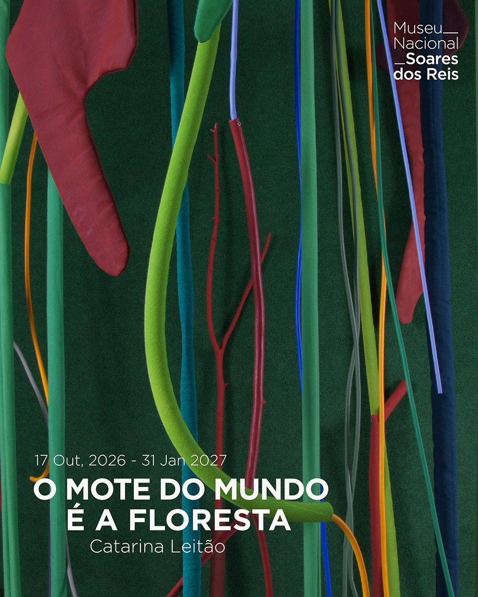

O Mote do Mundo é a Floresta
Museu Nacional Soares dos Reis, Porto · 17 de outubro de 2026 a 31 de janeiro de 2027

O Mote do Mundo é a Floresta toma o título emprestado a Ursula K. Le Guin para pensar a natureza não como algo exterior à cultura, mas como construção material e imaginária. Desenvolvida especificamente para este espaço, a instalação nasce de uma investigação no acervo do Museu Nacional Soares dos Reis e coloca em relação objetos históricos e obras minhas. Entre cerâmica, têxtil, pedra, tinta e matéria vegetal, representação e fabricação aproximam-se: a floresta torna-se uma figura daquilo que cresce, se transforma e atravessa categorias.
- Patente
- Até 31 de janeiro de 2027
- Horário
- Terça a domingo, 10h–18h. Entrada livre para residentes em Portugal
- Contexto
- Residência artística no âmbito de Cruzamentos Artísticos, tema da programação do museu em 2026